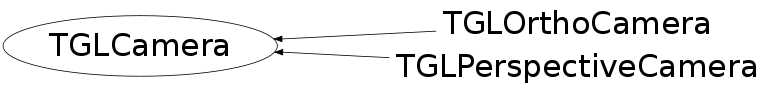

class TGLCamera
TGLCamera Abstract base camera class - concrete classes for orthographic and persepctive cameras derive from it. This class maintains values for the current: i) Viewport ii) Projection, modelview and clip matricies - extracted from GL iii) The 6 frustum planes iv) Expanded frustum interest box It provides methods for various projection, overlap and intersection tests for viewport and world locations, against the true frustum and expanded interest box, and for extracting eye position and direction. It also defines the pure virtual manipulation interface methods the concrete ortho and prespective classes must implement.
Function Members (Methods)
This is an abstract class, constructors will not be documented.
Look at the header to check for available constructors.
public:
protected:
| void | UpdateCache() const |
Data Members
protected:
| Bool_t | fCacheDirty | ! cached items dirty? |
| TGLMatrix | fCamBase | ! tranformation to center and rotation from up to x vector |
| TGLMatrix | fCamTrans | ! transformation relative to fCamTrans |
| TGLVector3* | fCenter | ! current camera center |
| TGLMatrix | fClipM | ! object space clip matrix (cached) |
| TGLVector3 | fDefCenter | ! deafult camera center |
| Double_t | fDollyDefault | ! default distnce from viewing centre |
| Double_t | fDollyDistance | ! unit distance for camera movement in fwd/bck direction |
| TGLVector3 | fExtCenter | ! external camera center |
| Bool_t | fExternalCenter | ! use external center insead of scene center |
| TGLVector3 | fFDCenter | ! fixed deafult camera center |
| Double_t | fFarClip | ! last applied far-clip |
| Bool_t | fFixDefCenter | ! use fixed default center |
| TGLPlane | fFrustumPlanes[6] | ! frustum planes (cached) |
| TGLBoundingBox | fInterestBox | ! the interest box - created in UpdateInterest() |
| Double_t | fLargestSeen | ! largest box diagonal seen in OfInterest() - used when |
| TGLMatrix | fLastNoPickProjM | ! no-pick projection matrix (cached) |
| TGLMatrix | fModVM | ! modelView matrix (cached) |
| Double_t | fNearClip | ! last applied near-clip |
| TGLMatrix | fProjM | ! projection matrix (cached) |
| UInt_t | fTimeStamp | ! timestamp |
| Float_t | fVAxisMinAngle | ! minimal allowed angle between up and fCamTrans Z vector |
| TGLRect | fViewport | ! viewport (GL coords - origin bottom left) |
| static UInt_t | fgDollyDeltaSens |
private:
| TGLBoundingBox | fInterestFrustum | ! frustum basis of current interest box - NOT a true BB! (DEBUG) |
| TGLBoundingBox | fInterestFrustumAsBox | ! frustum basis (as box) of current interest box (DEBUG) |
| TGLBoundingBox | fPreviousInterestBox | ! previous interest box (DEBUG) |
| static const Double_t | fgInterestBoxExpansion | ! expansion c.f. aligned current frustum box |
Class Charts
{kind=link}
{kind=link}
{kind=link}
{kind=link}

Function documentation
TGLBoundingBox Frustum(Bool_t asBox = kTRUE) const
Return the the current camera frustum. If asBox == kFALSE return a true frustum (truncated square based pyramid). If asBox == kTRUE return a true box, using the far clipping plane intersection projected back to the near plane. Camera must have valid frustum cache - call Apply() after last modifcation, before using Note: TGLBoundingBox is not really valid when filled with truncated pyramid - this is used as a visual debug aid only so ok.
TGLVertex3 EyePoint() const
Return the camera eye point (vertex) in world space Camera must have valid frustum cache - call Apply() after last modifcation, before using
TGLVector3 EyeDirection() const
TGLVertex3 FrustumCenter() const
Find the center of the camera frustum from intersection of planes This method will work even with parallel left/right & top/bottom and infinite eye point of ortho cameras Camera must have valid frustum cache - call Apply() after last modifcation, before using
EOverlap FrustumOverlap(const TGLBoundingBox& box) const
Calcaulte overlap (kInside, kOutside, kPartial) of box with camera frustum Camera must have valid frustum cache - call Apply() after last modifcation, before using
EOverlap ViewportOverlap(const TGLBoundingBox& box) const
Calculate overlap (kInside, kOutside, kPartial) of box projection onto viewport (as rect) against the viewport rect. Camera must have valid frustum cache - call Apply() after last modifcation, before using.
TGLRect ViewportRect(const TGLBoundingBox& box, TGLBoundingBox::EFace face) const
Calculate viewport rectangle which just contains projection of single 'face' of world frame bounding box 'box' onto the viewport. Note use other version of ViewportRect() if you want whole 'box' contained
TGLRect ViewportRect(const TGLBoundingBox& box, const TGLBoundingBox::EFace* face = 0) const
Calculate viewport rectangle which just contains projection of world frame bounding box 'box' onto the viewport. If face is null the rect contains the whole bounding box (8 vertices/6 faces). If face is non-null it indicates a box face, and the rect contains the single face (4 vertices). Note use other version of ViewportRect() if you wish to just pass a static EFace enum member (e.g. kFaceLowX) Note: i) Rectangle is NOT clipped by viewport limits - so can result in rect with corners outside viewport - negative etc ii) TGLRect provides int (pixel based) values - not subpxiel accurate iii) Camera must have valid frustum cache - call Apply() after last modifcation, before calling
TGLVertex3 WorldToViewport(const TGLVertex3& worldVertex, TGLMatrix* modviewMat = 0) const
Convert a 3D world vertex to '3D' viewport (screen) one. The X()/Y() components of the viewport vertex are the horizontal/vertical pixel positions. The Z() component is the viewport depth value - for a default depth range this is 0.0 (at near clip plane) to 1.0 (at far clip plane). See OpenGL gluProject & glDepth documentation Camera must have valid frustum cache - call Apply() after last modifcation, before using
TGLVector3 WorldDeltaToViewport(const TGLVertex3& worldRef, const TGLVector3& worldDelta) const
Convert a 3D vector worldDelta (shift) about vertex worldRef to a viewport (screen) '3D' vector. The X()/Y() components of the vector are the horizontal vertical pixel deltas. The Z() component is the viewport depth delta - for a default depth range between 0.0 (at near clip plane) to 1.0 (at far clip plane) See OpenGL gluProject & glDepth documentation Camera must have valid frustum cache - call Apply()
TGLVertex3 ViewportToWorld(const TGLVertex3& viewportVertex, TGLMatrix* modviewMat = 0) const
Convert a '3D' viewport vertex to 3D world one. The X()/Y() components of viewportVertex are the horizontal/vertical pixel position.
TGLLine3 ViewportToWorld(Double_t viewportX, Double_t viewportY) const
Convert a 2D viewport position to 3D world line - the projection of the
viewport point into 3D space. Line runs from near to far camera clip planes
(the minimum and maximum visible depth). See also
TGLVertex3 TGLCamera::ViewportToWorld(const TGLVertex3 & viewportVertex) const
for 3D viewport -> 3D world vertex conversions.
See also OpenGL gluUnProject & glDepth documentation
Camera must have valid frustum cache - call Apply() after last modifcation, before using
TGLLine3 ViewportToWorld(const TPoint& viewport) const
Convert a 2D viewport position to 3D world line - the projection of the
viewport point into 3D space. Line runs from near to far camera clip planes
(the minimum and maximum visible depth). See also
TGLVertex3 TGLCamera::ViewportToWorld(const TGLVertex3 & viewportVertex) const
for 3D viewport -> 3D world vertex conversions.
See also OpenGL gluUnProject & glDepth documentation
Camera must have valid frustum cache - call Apply() after last modifcation, before using
std::pair<Bool_t, TGLVertex3> ViewportPlaneIntersection(Double_t viewportX, Double_t viewportY, const TGLPlane& worldPlane) const
Find the intersection of projection of supplied viewport point (a 3D world line - see ViewportToWorld) with supplied world plane. Returns std::pair of Bool_t and TGLVertex3. If line intersects std::pair.first (Bool_t) is kTRUE, and std::pair.second (TGLVertex) contains the intersection vertex. If line does not intersect (line and plane parallel) std::pair.first (Bool_t) if kFALSE, and std::pair.second (TGLVertex) is invalid. NOTE: The projection lines is extended for the plane intersection test hence the intersection vertex can lie outside the near/far clip regions (not visible) Camera must have valid frustum cache - call Apply() after last modifcation, before using
std::pair<Bool_t, TGLVertex3> ViewportPlaneIntersection(const TPoint& viewport, const TGLPlane& worldPlane) const
Find the intersection of projection of supplied viewport TPoint (a 3D world line - see ViewportToWorld) with supplied world plane. Returns std::pair of bool and vertex. If line intersects Camera must have valid frustum cache - call Apply() after last modifcation, before using
TGLVector3 ViewportDeltaToWorld(const TGLVertex3& worldRef, Double_t viewportXDelta, Double_t viewportYDelta, TGLMatrix* modviewMat = 0) const
Bool_t OfInterest(const TGLBoundingBox& box, Bool_t ignoreSize) const
Calculate if the an object defined by world frame bounding box is 'of interest' to the camera. This is defined as box: i) intersecting completely or partially (kInside/kPartial) with cameras interest box (fInterestBox) ii) having significant length OR volume ratio compared to this interest box If a box is 'of interest' returns kTRUE, kFALSE otherwise. See TGLCamera::UpdateInterest() for more details of camera interest box. Note: Length/volume ratios NOT dependent on the projected size of box at current camera configuration as we do not want continual changes. This is used when (re) populating the scene with objects from external client. TODO: Might be more logical to move this test out to client - and have accessor for fInterestBox instead?
Bool_t UpdateInterest(Bool_t force)
Update the internal interest box (fInterestBox) of the camera. The interest box is an orientated bounding box, calculated as an expanded container round the frustum. It is used to test if if object bounding boxes are of interest (should be accepted into viewer scene) for a camera - see TGLCamera::OfInterest() The interest box is updated if the frustum is no longer contained in the existing one, or a new one calculated on the current frustum differs significantly in volume (camera has been zoomed/dollyed sizable amount). If the interest box is updated we return kTRUE - kFALSE otherwise.
Bool_t AdjustAndClampVal(Double_t& val, Double_t min, Double_t max, Int_t screenShift, Int_t screenShiftRange, Bool_t mod1, Bool_t mod2) const
Adjust a passed REFERENCE value 'val', based on screenShift delta.
Two modifier flags ('mod1' / 'mod2' ) for sensitivity:
mod1 = kFALSE, mod2 = kFALSE : normal sensitivity (screenShift/screenShiftRange)
mod1 = kTRUE, mod2 = kFALSE : 0.1x sensitivity
mod1 = kTRUE, mod2 = kTRUE : 0.01x sensitivity
mod1 = kFALSE, mod2 = kTRUE : 10.0x sensitivity
'val' is modified and clamped to 'min' / 'max' range.
Return bool kTRUE if val actually changed.
Used as common interaction function for adjusting zoom/dolly etc
Double_t AdjustDelta(Double_t screenShift, Double_t deltaFactor, Bool_t mod1, Bool_t mod2) const
Adjust a passed screen value and apply modifiers. See AdjustAndClampVal() for details.
void DrawDebugAids() const
Draw out some debugging aids for the camera: i) The frustum used to create the current interest box (RED) ii) The same frustum as a squared off box (ORANGE) iii) The axis aligned version of the frustum used as interest box basis (YELLOW) iv) The current interest box (BLUE)
void SetCenterVecWarp(Double_t x, Double_t y, Double_t z)
Set camera center vector and do not keep the same combined camera transformation matrix. It appears as if the camera warped to the new center.
Bool_t Dolly(Int_t delta, Bool_t mod1, Bool_t mod2)
Dolly the camera - 'move camera along eye line, retaining lens focal length'. Arguments are: 'delta' - mouse viewport delta (pixels) - +ive dolly in, -ive dolly out 'mod1' / 'mod2' - sensitivity modifiers - see TGLCamera::AdjustAndClampVal() Returns kTRUE is redraw required (camera change), kFALSE otherwise.
const TGLPlane & FrustumPlane(TGLCamera::EFrustumPlane plane) const
Return one of the planes forming the camera frustum
void Setup(const TGLBoundingBox& box, Bool_t reset = kTRUE)
Camera manipulation interface (GL coord - origin bottom left)
void Reset()
void Apply(const TGLBoundingBox& sceneBox, const TGLRect* pickRect = 0) const
const TGLMatrix& GetCamTrans() const
If you manipulate camera ... also call IncTimeStamp() before redraw.
{ return fCamTrans; }void Configure(Double_t zoom, Double_t dolly, Double_t* center, Double_t hRotate, Double_t vRotate)
Cameras expanded-frustum interest box